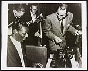

I chose this digitized photograph because it represents the collaboration between two artists-- one prominent in pop music and the other in jazz. This connects back to my topic because it's about music but more specifically about how the artists of different genres work together. This digitized photo matters since it was taken in 1959 when recial segregation was still occuring in the United States Because Nat King Cole was a prominent Black artist and Frank Sinatra was a white artist, it makes their collaboration significant as it reveals the artists of different racial and musical backgrounds coming together to create music. By digitalizing it, it allows people to access this historic photo.